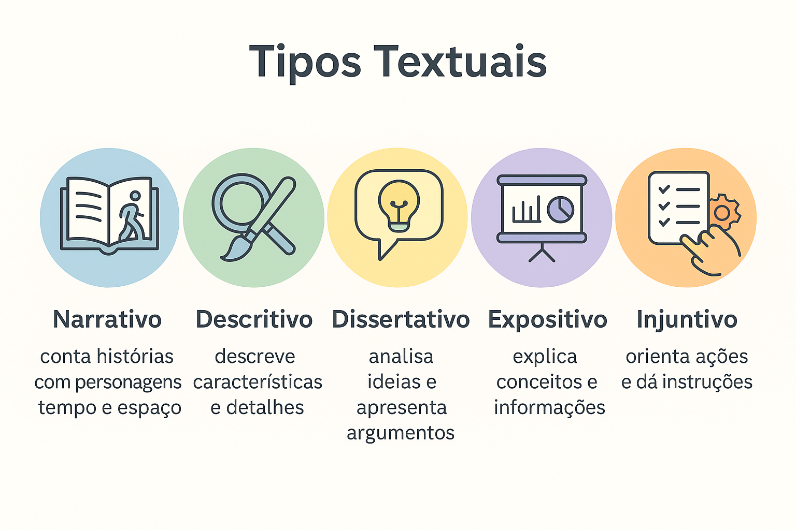

Tipos Textuais: O que são, Características, Exemplos e Diferenças
Seja na hora de escrever a redação do ENEM, produzir um trabalho na faculdade ou simplesmente resolver questões de interpretação de texto nos vestibulares, compreender como a linguagem se organiza é o primeiro passo para o sucesso. É exatamente aí que entram os tipos textuais (ou sequências tipológicas).
Enquanto no dia a dia nos deparamos com infinitas formas de comunicação — de um bilhete de geladeira a um artigo científico —, as estruturas gramaticais e funcionais que sustentam esses textos pertencem a um número restrito e bem definido de modelos. Dominar os tipos textuais permite que você decodifique a intenção comunicativa de qualquer autor com precisão cirúrgica.
Neste guia completo, você aprenderá o que são tipos textuais, explorará em detalhes as características linguísticas dos cinco tipos canônicos (narrativo, descritivo, dissertativo, expositivo e injuntivo), entenderá a diferença crucial entre tipo e gênero e testará seus conhecimentos com uma questão comentada.

O que são Tipos Textuais?
Os tipos textuais constituem modelos estruturais fixos e limitados da língua, definidos pela sua natureza linguística — isto é, pelo vocabulário, pelas classes gramaticais predominantes, pelos tempos verbais e pela finalidade imediata do enunciado. Diferente dos gêneros textuais (que são incontáveis e mutáveis), a tipologia textual compreende um conjunto reduzido de categorias teóricas.
Tipos Textuais são categorias linguísticas fechadas que determinam a forma composicional do texto, organizadas a partir de traços gramaticais específicos, tempos e modos verbais, relações lógicas e intenção comunicativa predominante.
Quais são os 5 Tipos Textuais Canônicos?
A tradição dos estudos linguísticos e as diretrizes pedagógicas brasileiras consolidam cinco sequências tipológicas fundamentais:
1. Tipo Narrativo
O texto narrativo relata uma sucessão cronológica ou psicológica de acontecimentos articulados entre si. Sua essência reside na transformação de um estado inicial provocada por uma ou mais ações desenvolvidas por personagens no tempo e no espaço.
- Marcas linguísticas: predomínio de verbos de ação no pretérito (perfeito e imperfeito), marcadores temporais ("então", "logo após", "quando", "certa manhã") e articuladores de causalidade.
- Elementos da narrativa (PENTE): Personagens, Espaço, Narrador (foco em 1ª ou 3ª pessoa), Tempo e Enredo (com conflito, clímax e desfecho).
- Exemplo prático: "Quando a sirene soou, Marina recolheu apressadamente os cadernos sobre a carteira. Ela sabia que precisava alcançar o último trem antes que a tempestade inundasse os trilhos da estação central."
2. Tipo Descritivo
O texto descritivo constrói um retrato verbal estático de um objeto, pessoa, ambiente, fenômeno ou estado psicológico. Não há progressão temporal relevante: as cenas funcionam como uma fotografia em palavras.
- Marcas linguísticas: abundância de substantivos, adjetivos, locuções adjetivas e figuras sensoriais; predomínio de verbos de estado ou ligação (ser, estar, permanecer, parecer) conjugados no presente do indicativo ou no pretérito imperfeito.
- Modalidades: descrição objetiva (foco denotativo, técnico, sem julgamentos pessoais) ou subjetiva (foco nas impressões afetivas e sensoriais do observador).
- Exemplo prático: "A antiga biblioteca mantinha um aroma denso de madeira e papel envelhecido. Pelas frestas das venezianas entreabertas, raios dourados de sol iluminavam fileiras simétricas de estantes altas e silenciosas."
3. Tipo Dissertativo
O texto dissertativo debruça-se sobre a reflexão, análise, julgamento ou defesa de um ponto de vista a respeito de determinado tema social, científico, cultural ou político. Divide-se em dissertativo-expositivo e dissertativo-argumentativo (modelo padrão da redação do ENEM).
- Marcas linguísticas: uso da norma-padrão formal, operadores argumentativos e conectivos de coesão ("portanto", "ademais", "desse modo", "por conseguinte"), modalizadores de certeza ou probabilidade e raciocínio lógico articulado em introdução, desenvolvimento e conclusão.
- Foco comunicativo: convencer, persuadir ou incitar reflexão no leitor a partir de argumentos sustentados em dados, repertórios legitimados e teses consistentes.
- Exemplo prático: "A democratização da alfabetização midiática é indispensável para a manutenção do Estado democrático. Dessa forma, instrumentalizar criticamente o cidadão reduz sua vulnerabilidade diante das engrenagens de desinformação digital."
4. Tipo Expositivo (Informativo)
O texto expositivo tem como meta principal apresentar, explicar e conceitualizar um determinado assunto de forma neutra, clara e didática, sem a intenção de defender uma tese pessoal ou persuadir o leitor.
- Marcas linguísticas: linguagem denotativa, vocabulário técnico ou especializado condizente com o campo de conhecimento, uso de verbos no presente do indicativo em construções atemporais ("define-se", "caracteriza-se por", "consiste em") e estruturação pautada em dados e definições enciclopédicas.
- Foco comunicativo: ampliar o conhecimento do leitor acerca de determinado fenômeno, conceito teórico ou fato histórico.
- Exemplo prático: "A mitose é o processo de divisão celular por meio do qual uma célula eucariótica original dá origem a duas células geneticamente idênticas, sendo fundamental para o crescimento tecidual e a regeneração de organismos multicelulares."
5. Tipo Injuntivo (Instrucional)
O texto injuntivo orienta, aconselha, guia ou indica os passos necessários para que o leitor execute determinada tarefa ou adote certo comportamento prático.
- Marcas linguísticas: utilização categórica de verbos no imperativo ("misture", "clique", "insira"), orações no infinitivo com sentido de comando, ou perífrases modais de obrigação/conselho ("deve-se utilizar", "é necessário conferir"); estruturação sequenciada em tópicos, etapas ou numerações.
- Diferenciação importante: enquanto o texto injuntivo instrui e sugere caminhos (com certa flexibilidade de adesão), o texto prescritivo (leis, editais, cláusulas contratuais) impõe obrigações sob pena de sanção legal.
- Exemplo prático: "Preaqueça o forno a 180 °C. Em seguida, adicione os ovos à mistura seca e mexa continuamente com o auxílio de uma espátula até obter consistência uniforme."
Atenção: Heterogeneidade Tipológica
Raramente um texto é 100% puro em sua tipologia. Na prática, os textos que lemos são híbridos (compostos por várias sequências tipológicas). Um romance, por exemplo, é predominantemente narrativo, mas frequentemente traz longas passagens descritivas (ao detalhar cenários) e trechos dissertativos (nos diálogos reflexivos dos personagens). Identificar a tipologia de um texto significa identificar sua sequência dominante.
Quadro Comparativo: Síntese das Sequências Tipológicas
Observe a matriz sintética dos cinco tipos textuais com seus focos funcionais e gramaticais:
| Tipo Textual | Objetivo Principal | Marcas Linguísticas Predominantes | Gêneros em que Costuma Predominar |
|---|---|---|---|
| Narrativo | Relatar ações e fatos no tempo e no espaço. | Verbos no pretérito, marcadores temporais, presença de narrador e personagens. | Contos, romances, fábulas, crônicas, tirinhas e biografias. |
| Descritivo | Retratar características de seres, objetos ou ambientes. | Substantivos, adjetivos, verbos de ligação no presente ou pretérito imperfeito. | Retratos verbais, laudos periciais, cardápios, guias turísticos e folhetos. |
| Dissertativo | Analisar, debater e defender ideias por meio de argumentos. | Linguagem formal culta, conectores de causa e conclusão, operadores argumentativos. | Artigos de opinião, dissertação do ENEM, editoriais e ensaios acadêmicos. |
| Expositivo | Apresentar informações e conceitos de modo objetivo. | Clareza denotativa, impessoalidade, verbos no presente conceitual e dados factuais. | Verbetes de dicionário, enciclopédias, relatórios científicos e livros didáticos. |
| Injuntivo | Instruir, ensinar ou prescrever passos e procedimentos. | Verbos no imperativo ou infinitivo modal, enumerações, linguagem apelativa direta. | Receitas culinárias, manuais de instrução, bulas de remédio e regulamentos. |
Tipos Textuais vs. Gêneros Textuais
Confundir tipo com gênero é um dos erros mais frequentes entre os estudantes. Compreenda a distinção categórica:
Tipos Textuais
São estruturas linguísticas teóricas e fixas (em número finito: 5 modelos principais). Definem a forma de organização gramatical e interna da mensagem (como os verbos, tempos e orações se articulam).
Gêneros Textuais
São as materializações sociais e históricas da comunicação (em número infinito e em constante renovação). Definem-se pela situação de uso, suporte, público-alvo e função social (e-mail, tweet, podcast, notícia, receita).
Questão de Aplicação
Questão: (Mestre Kira) Leia atentamente os dois fragmentos a seguir extraídos de veículos de comunicação:
Texto I: "Desembale o produto sobre uma superfície plana e nivelada. Certifique-se de que todos os parafusos listados no encarte estejam presentes. Encaixe a haste 'A' na base circular 'B' até ouvir o clique de travamento."
Texto II: "O dispositivo conta com chassi metálico anodizado de 120 milímetros, acabamento acetinado na cor grafite e cantos suavemente chanfrados, o que confere ao aparelho uma sensação de solidez e ergonomia apurada."
Considerando a tipologia textual predominante nos fragmentos I e II, assinale a opção que classifica de maneira correta e respectiva as sequências linguísticas adotadas:
- I: Dissertativa-argumentativa; II: Narrativa.
- I: Injuntiva; II: Descritiva.
- I: Expositiva; II: Prescritiva.
- I: Injuntiva; II: Dissertativa-expositiva.
- I: Narrativa; II: Descritiva.
Resolução
A alternativa correta é a 2 — I: Injuntiva; II: Descritiva.
Comentário analítico: No Texto I, a intenção comunicativa é orientar o leitor a executar procedimentos operacionais passo a passo, o que fica evidente pelo emprego enfático de verbos no modo imperativo ("desembale", "certifique-se", "encaixe"), configurando tipologia injuntiva. Já no Texto II, o objetivo primordial é construir uma representação estática e detalhada dos atributos materiais de um objeto físico (dimensões, textura, cores e acabamento), com abundância de substantivos e adjetivos qualificadores, o que caracteriza tipologia descritiva.
Aproveite para fixar o assunto e praticar respondendo ao nosso quiz sobre os tipos textuais!
Resumo: Como Dominar os Tipos Textuais?
Os tipos textuais compõem o esqueleto gramatical e discursivo de qualquer texto que circula em nossa sociedade.
- Cinco moldes básicos: Narrativo (ações no tempo), Descritivo (características no espaço), Dissertativo (defesa de tese e ideias), Expositivo (explicação neutra de conceitos) e Injuntivo (instrução e comandos).
- Foco linguístico: Para identificar o tipo predominante em uma questão, examine atentamente os tempos verbais (pretérito, presente ou imperativo) e a presença de adjetivos, marcadores temporais ou operadores argumentativos.
- Natureza híbrida: Lembre-se de que quase todo gênero textual é composto por mais de uma tipologia; identifique sempre qual sequência exerce papel dominante.
- Tipo vs. Gênero: O tipo é a estrutura linguística interna (teórica e finita); o gênero é a aplicação social concreta do texto (prática e infinita).
Continue estudando Produção Textual
- Gêneros textuais e tipos textuais: diferenças, características e relações
- Texto Narrativo: o que é, elementos (PENTE) e estrutura do enredo
- Texto Descritivo: o que é, características, tipos e exemplos práticos
- Texto Expositivo: o que é, características, tipos e exemplos
- Texto Injuntivo: o que é, características, exemplos e diferenças
- Texto Prescritivo: o que é, características e diferenças para o texto injuntivo
- Coesão, coerência e progressão temática na produção textual
- Produção Textual e Redação — página 1
- Produção Textual e Redação — página 2
Referências
BAKHTIN, Mikhail. Os gêneros do discurso. In: Estética da criação verbal. São Paulo: Martins Fontes, 2003.
KOCH, Ingedore Grunfeld Villaça; ELIAS, Vanda Maria. Ler e compreender os sentidos do texto. São Paulo: Contexto, 2006.
MARCUSCHI, Luiz Antônio. Gêneros textuais: definição e funcionalidade. In: DIONÍSIO, A. P.; MACHADO, A. R.; BEZERRA, M. A. (Orgs.). Gêneros textuais & ensino. Rio de Janeiro: Lucerna, 2002.
Explore Outros Conteúdos
Continue seus estudos acessando outras seções do site Mestre Kira: